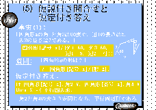

<html>
<head>
<title> Slide No.13 </title>
</head>

<frameset rows="430,130">

<noframes>
<body>
<a href="GIF/slide13.GIF"></a>

<a href="AU/voice13.au">
	</a>[489K]<p>
<!--		-->
さて、次に <b> Quixote </b> の５番目の特徴である、
<a href=""> 仮説付き問合せと仮定付き答え </a> について説明します。<p>

例えば、<br>
<a href=""> 「四角形ａの角１と角２は６０度で、辺１の長さは５、
	      辺２の長さは７」 </a> <br>
とします。すると、この事実は、
<b> Quixote </b> では OHP の最初の四角の中のように表されます。<p>

これに対して、<a href=""> 「四角形ａの形は？」 </a> と問いたくなったと
すると、<b> Quixote </b> では、２番目の四角の中のように表されます。<p>

そして、これらに対する答えは、最後の四角の中のものが返されます。
これは、<a href=""> 「角２と角４の大きさが同じなら、平行四辺形である」 </a>
を意味します。<p>

気づかれた方もいらっしゃると思いますが、答の IF の部分は仮定です。
<b> Quixote </b> では、データベースにない知識を仮定として返します。
つまり、答から、データベースは「角２と角４の大きさが同じかどうか
知らない」ことが分かります。
<p>
<!--		-->

<hr>
<a href="slide14.html" target="_top">次の OHP へ</a>
<br><br>
<a href="slide12.html" target="_top">前の OHP へ</a>
<br><br>
<a href="HomePage.html" target="_top">OHP の一覧へ</a>
</body>
</noframes>

<frame src="onlyslide13.html">
<frame src="buttonexpla13.html">

</frameset>

</html>
